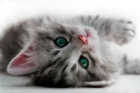
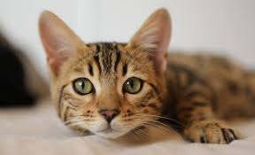

MASCOTAS ENCONTADAS
Publicá aquí la mascota que encontraste o busca entre las que se han encontrado personas con un lindo corazón que las pusieron a salvo

ADOPTA A UN AMIGO
Aquí puedes buscar a quien te acompañará los próximos años de tu vida. Piensa en las características y te será más fácil encontrarlo.

AYUDANDO A ENCONTRARLOS
Mascotas Perdidas. Publicá aquí tu mascota perdida o busca entre las que se han reportado como perdidas.